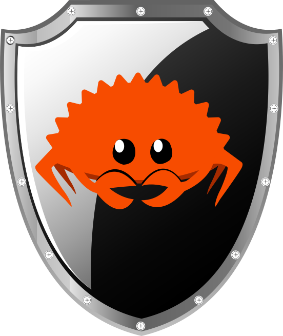

Alexis Mousset
I'm a system engineer working on open-source infrastructure software. I do system programming in Rust (and sometimes C) and Linux system management (packaging, server administration, containers, observability, etc.). I'm also interested in documentation and UX topics.
projects
Rudder - since 2015
I'm currently employed as a lead developer at Rudder, building system automation tools. The parts of the project I mainly work on are:
- relayd: a network daemon (built in Rust with tokio), the backbone of agent-server communication
- security: communications security design, vulnerabilities handling, etc.
- configuration agent and policies: configuration management agent and configuration policies library for Unix systems
- CI/CD: Jenkins Pipeline and Docker-based internal CI platform
- documentation: documentation platform for Rudder, including manuals, tutorials and API docs
- system integration: rpm/dpkg packaging, SELinux policies, container support
- CFEngine: various bug fixes, performance improvements, and small features
lettre - since 2014
I'm the original author and one of the current maintainers of an email client for Rust programs allowing easily sending emails from Rust applications by providing pluggable transport and strongly typed modern email features.
Rust Secure Code WG / RustSec - since 2022
I'm one of the current maintainers of the security vulnerability database for the Rust ecosystem, also working on associated tooling and the rustsec.org website
talks
-
Implementing
configuration management primitives in 2024
Configuration Management Camp 2024 -
Supply
Chain Security
in the Rust Ecosystem: A case study
Pass The SALT 2023 -
Securing
the software supply chain of infra management tools
Configuration Management Camp 2023 -
Designing
the future of agent-server communication in Rudder
Configuration Management Camp 2020